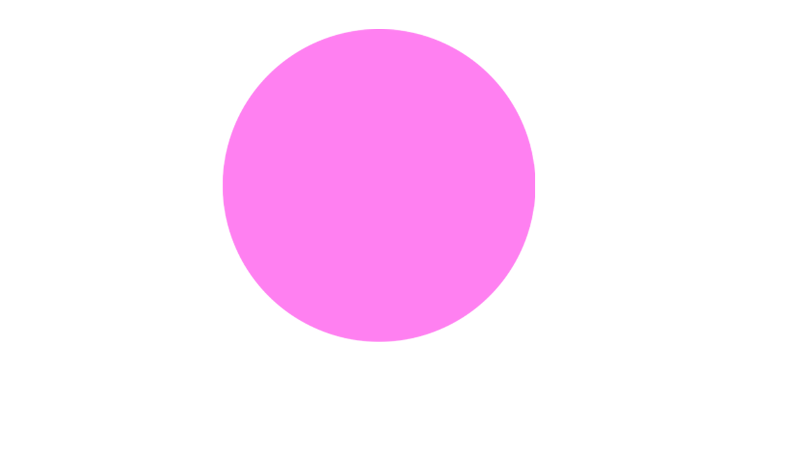
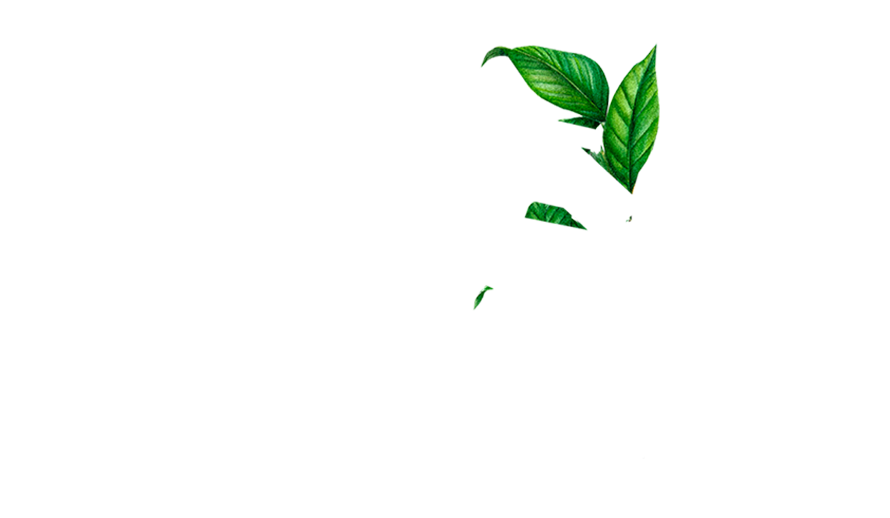
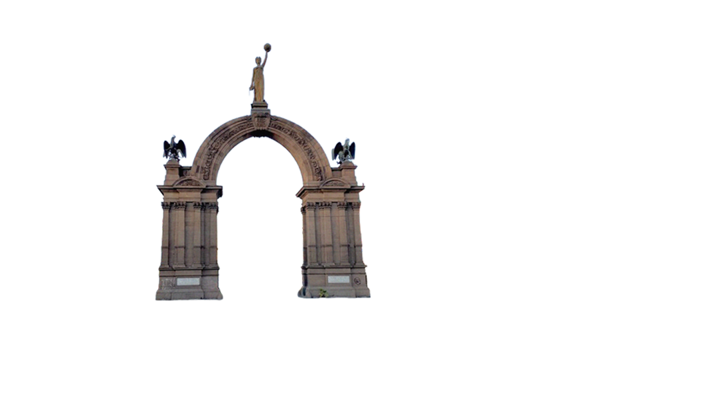
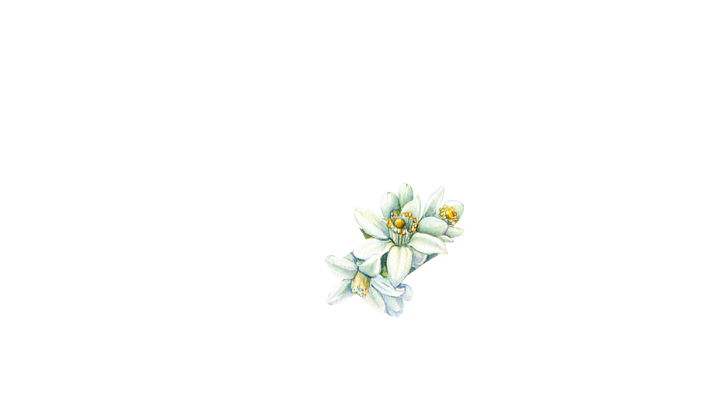
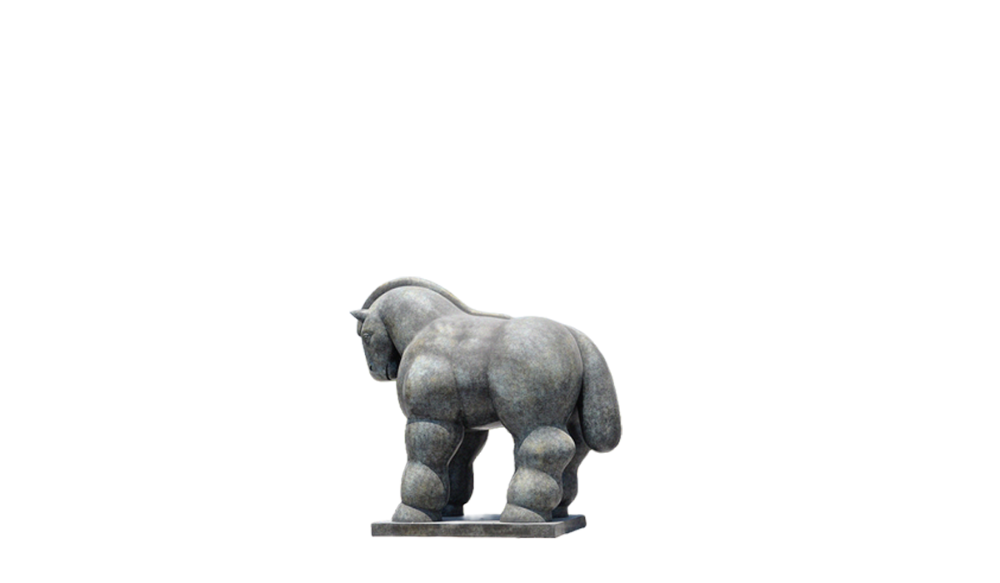

Bienvenido a 100 imperdibles de México, un especial de Dónde Ir creado para ayudarte a
descubrir los
lugares, sabores, rincones y experiencias que mejor representan al país. Encontrarás una selección
de espacios para comer increíble, salir de noche, empaparte de cultura, recorrer mercados icónicos y
conocer sitios que valen la pena en Ciudad de México, Guadalajara y Monterrey.
Presentado por vivo Smartphone, porque los mejores viajes no solo se viven: también se recuerdan.
Explora nuestras listas con los mejores restaurantes, bares, mercados, monumentos y espacios culturales en CDMX, Guadalajara y Monterrey.


Descubre el mapa de CDMX con restaurantes, bares, mercados, monumentos y espacios culturales imperdibles.

Restaurantes

Bares

Mercados

Monumentos

Espacios culturales
Restaurantes imperdibles en CDMX: alta cocina, clásicos capitalinos y lugares para comer delicioso.